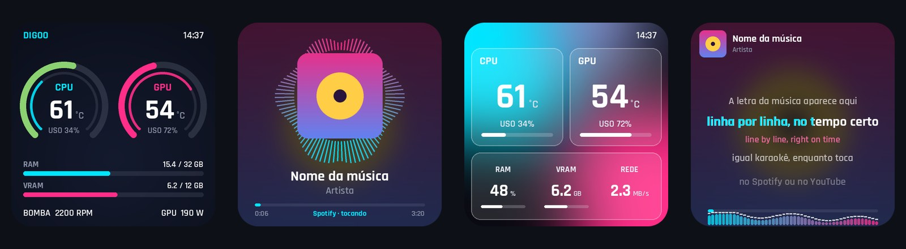
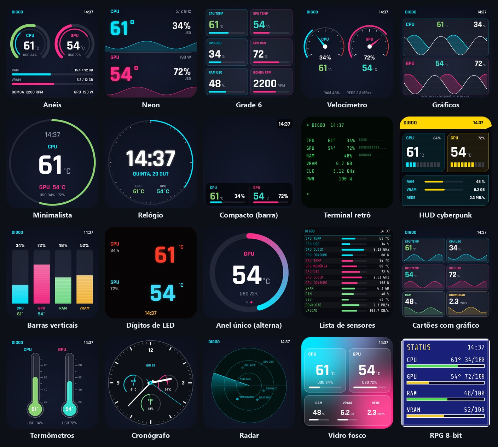
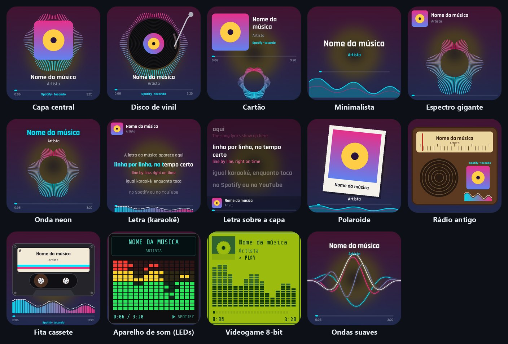

O que ele faz na tela do water cooler
20 temas de temperatura
CPU, GPU, RAM, VRAM, rede, ventoinhas e bomba, em anéis, ponteiros, gráficos, lista, radar, vidro fosco, 8-bit e mais.
GIF, vídeo e foto
Playlist com velocidade ajustável. Vídeo roda leve, com cerca de 1% de processador.
Wallpaper Engine
Navega e baixa wallpapers do Workshop pela sua Steam, e mostra os que você já tem.
Spotify e YouTube
Capa, título, tempo e ondas do som. Letra sincronizada estilo karaokê, com tradução.
Tema por cima do vídeo
Deixe a temperatura por cima do GIF ou vídeo, com transparência ajustável.
Leve e automático
Fica na bandeja, abre com o Windows, modo noturno, brilho e controle da ventoinha da GPU.
Como usar
- Baixe o zip em Releases e extraia em qualquer pasta.
- Abra o DigooLCD.exe com o water cooler ligado no USB. A tela é achada sozinha.
- Escolha um tema na aba Temas. Para ver a temperatura da CPU, instale o driver grátis PawnIO pelo botão na aba Sensores.
Não precisa instalar Python nem nada. A interface é em português.
Temas

Música, letra e tradução

Dúvidas comuns
Meu water cooler Digoo veio sem software. Esse programa serve?
Serve se a tela aparece no Gerenciador de Dispositivos como porta COM com o ID 33c3:7791 (ou 7788/7792). É o painel HONGTAI que vem nos watercoolers Digoo, LovingCool e de outras marcas.
A tela do water cooler voltou para a imagem de fábrica. O que fazer?
Isso acontece quando nenhum programa está mandando imagem. Deixe o Digoo LCD Studio aberto (ele fica na bandeja, perto do relógio) ou marque "Iniciar junto com o Windows" na aba Configurações.
Por que não aparece a temperatura da CPU?
Instale o driver grátis PawnIO pelo botão na aba Sensores. É o driver que o LibreHardwareMonitor usa para ler a temperatura da CPU.
Dá para colocar GIF ou vídeo na tela do water cooler?
Sim. Arraste o arquivo para a janela do programa ou procure na aba Biblioteca (GIPHY, anime e Workshop do Wallpaper Engine). Dá para deixar a temperatura por cima do vídeo.
Mostra a música do Spotify e do YouTube?
Sim, com capa, título, tempo, ondas do som e a letra sincronizada no estilo karaokê, com tradução opcional.
Digoo water cooler software (English)
Free software for the LCD screen of the Digoo AIO water cooler and other coolers with the HONGTAI/LOVINGCOOL panel (USB 33c3:7791). Shows CPU/GPU temperature, plays GIFs and videos, browses the Wallpaper Engine Workshop and shows Spotify/YouTube "now playing" with synced lyrics and translation. Windows 10/11, open source (MIT). The interface is in Portuguese. Download for Windows.